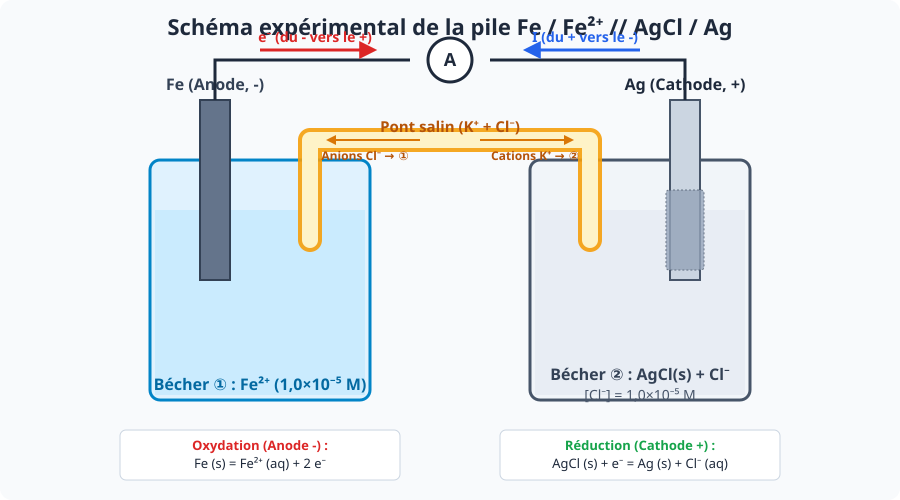
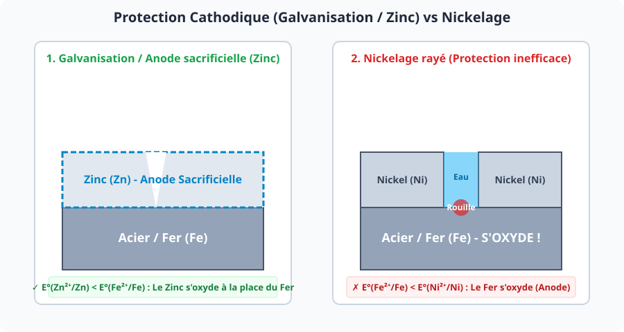

1.1. Écrire la demi-équation d'oxydoréduction associée au couple \ce{Ag+ (aq) / Ag (s)}.
1.2. Sachant que \ce{AgCl (s)} se dissout partiellement dans l'eau selon la réaction \ce{AgCl (s) = Ag+ (aq) + Cl- (aq)}, compléter la demi-équation d'oxydoréduction pour le couple \ce{AgCl (s) / Ag (s)} obtenue en combinant la demi-équation de l'ion libre dissous et l'équation d'équilibre de dissolution du solide :
1.3. En déduire l'équation de la réaction d'oxydation du fer \ce{Fe (s)} en ions ferreux \ce{Fe^2+ (aq)} par \ce{AgCl (s)}.
• La constante d'équilibre de cette réaction vaut $K = 10^{22}$.
On réalise la pile suivante (pont salin : solution $\ce{K+ (aq) + Cl- (aq)}$ saturée et gélifiée) :
1.4. Calculer le quotient de réaction initial, déterminer le sens de réaction, l'anode et la cathode et la polarité de cette pile.
1.5. Ajouter un ampèremètre pour fermer le circuit et indiquer le sens des porteurs de charges dans les fils, les béchers et le pont salin.
Dans les conditions de notre étude :
2.1. Expliquer pourquoi la fixation d'un morceau de zinc sur la coque d'un navire en acier (dont le fer est la principale composante) protège celle-ci de la corrosion (c'est-à-dire de l'oxydation) avec la notion de pile et de court-circuit.
2.2. On peut protéger une pièce d'acier vis-à-vis de la corrosion par nickelage (dépôt d'une couche fine de nickel). On constate que cette protection est inefficace si le dépôt présente une imperfection qui fait apparaître le support en acier. Expliquer ce résultat en écrivant l'équation d'oxydoréduction de la pile constituée.
2.3. Si le revêtement qui couvre l'acier est cette fois une couche de zinc (galvanisation), alors la protection est efficace même si le dépôt de zinc est abîmé. Jusqu'à quand cette protection sera-t-elle efficace contre la rouille du fer ?
Une demi-équation d'oxydoréduction traduit un échange d'électrons entre l'oxydant et le réducteur d'un même couple $\ce{Ox / Red}$ :
Règle stricte du Bac : Une demi-équation s'écrit obligatoirement avec le signe = (et non $\rightarrow$ ou $\rightleftharpoons$). La flèche simple $\rightarrow$ est réservée à l'équation-bilan de la réaction globale spontanée.
Pour une réaction chimique d'équation $\ce{\alpha A + \beta B -> \gamma C + \delta D}$, le quotient de réaction $Q_r$ s'exprime par :
$$\text{Q}_r = \frac{[\ce{C}]^\gamma \cdot [\ce{D}]^\delta}{[\ce{A}]^\alpha \cdot [\ce{B}]^\beta}$$Rappel d'activité : Les solides purs (ex: $\ce{Fe (s)}$, $\ce{Ag (s)}$, $\ce{AgCl (s)}$) et le solvant eau $\ce{H2O (l)}$ ont une activité égale à $1$ et n'apparaissent pas dans l'expression de $Q_r$.
Dans une pile électrochimique en fonctionnement (circuit fermé) :
La corrosion du fer est son oxydation en ions $\ce{Fe^2+ (aq)}$ (puis formation de rouille $\ce{Fe2O3\cdot nH2O}$).
La demi-équation d'oxydoréduction s'écrit avec le signe = :
Démonstration par combinaison d'équations :
On associe la demi-équation de réduction de l'ion argent libre et la réaction d'équilibre de dissolution du chlorure d'argent :
En simplifiant les ions $\ce{Ag+ (aq)}$ présents des deux côtés de l'égalité, on obtient la demi-équation complétée demandée :
Étape 1 : Écriture des deux demi-équations d'oxydoréduction
Étape 2 : Équation-bilan globale de la réaction
Pour équilibrer le nombre d'électrons échangés ($2\text{ e}^-$), on multiplie la demi-équation de réduction par 2 avant d'additionner membre à membre :
1. Calcul du quotient de réaction initial $Q_{r,i}$ :
L'équation de réaction est : $\ce{Fe (s) + 2 AgCl (s) -> Fe^2+ (aq) + 2 Ag (s) + 2 Cl- (aq)}$.
Les solides $\ce{Fe (s)}$, $\ce{AgCl (s)}$ et $\ce{Ag (s)}$ ont une activité égale à $1$. L'expression de $Q_r$ ne fait intervenir que les espèces dissoutes en solution :
Données numériques : $[\ce{Fe^2+}]_i = 1,0 \times 10^{-5} \text{ mol}\cdot\text{L}^{-1}$ et $[\ce{Cl-}]_i = 1,0 \times 10^{-5} \text{ mol}\cdot\text{L}^{-1}$ :
2. Sens d'évolution spontanée du système :
On compare $Q_{r,i}$ à la constante d'équilibre $K = 10^{22}$ :
$$\text{Q}_{r,i} = 1,0 \times 10^{-15} \ll K = 10^{22}$$Comme $Q_{r,i} < K$, le système chimique évolue spontanément dans le sens direct (sens 1), c'est-à-dire de la gauche vers la droite.
3. Identification des électrodes et polarité de la pile :

Description du mouvement des porteurs de charges :

Explication détaillée :
Lorsqu'un bloc de zinc est fixé directement sur la coque en acier (composée majoritairement de fer) et immergé dans l'eau de mer (eau + sels minéraux), l'ensemble forme une pile électrochimique en court-circuit :
Analyse en cas d'imperfection / rayure :
Si la couche de nickel présente une rayure ou une imperfection mettant l'acier à nu en présence d'humidité, il se forme une pile locale $\ce{Fe / Ni}$ en court-circuit :
Équation-bilan d'oxydoréduction de la pile constituée :
Les ions $\ce{Fe^2+ (aq)}$ et $\ce{HO- (aq)}$ formés réagissent ensuite pour former du précipité d'hydroxyde de fer \ce{Fe(OH)2 (s)} qui s'oxyde rapidement en rouille (\ce{Fe2O3\cdot nH2O}).
Conclusion : L'imperfection localise et accélère la corrosion du fer au niveau de la rayure (corrosion galvanique). Le nickelage devient totalement inefficace dès qu'il est abîmé.
Explication du mécanisme :
Même si la couche de galvanisation (zinc) est rayée ou abîmée, le zinc reste le réducteur le plus fort ($E^\circ(\ce{Zn^2+/Zn}) < E^\circ(\ce{Fe^2+/Fe})$). Le zinc continue d'être l'anode et de s'oxyder préférentiellement, protégeant le fer mis à nu au niveau de la rayure.
| Exercice / Question | Résultat principal / Équation | Notion clé associée |
|---|---|---|
| Q1.1 - Demi-éq. Ag⁺/Ag | $$\ce{Ag+ (aq) + e- = Ag (s)}$$ | Écriture avec le signe = |
| Q1.2 - Demi-éq. AgCl/Ag | $$\ce{AgCl (s) + e- = Ag (s) + Cl- (aq)}$$ | Combinaison réduction + dissolution |
| Q1.3 - Réaction globale Fe + AgCl | $$\ce{Fe (s) + 2 AgCl (s) -> Fe^2+ (aq) + 2 Ag (s) + 2 Cl- (aq)}$$ | Équilibre des électrons échangés ($2\text{ e}^-$) |
| Q1.4 - Quotient $Q_{r,i}$ & Sens | $\text{Q}_{r,i} = 1,0 \times 10^{-15} \ll K = 10^{22} \implies$ Sens direct | Anode (-) = Fe (Oxydation) ; Cathode (+) = Ag (Réduction) |
| Q1.5 - Porteurs de charge | $e^-$ du Fe vers Ag ; $I$ du Ag vers Fe ; Cl⁻ vers ① ; K⁺ vers ② | Électroneutralité par le pont salin |
| Q2.1 - Coque navire (Zinc) | $$\ce{Zn (s) = Zn^2+ (aq) + 2 e-}$$ | Anode sacrificielle (Zinc plus réducteur que Fer) |
| Q2.2 - Nickelage rayé | $$\ce{2 Fe (s) + O2 (aq) + 2 H2O (l) -> 2 Fe^2+ (aq) + 4 HO- (aq)}$$ | Corrosion galvanique du Fer (Fe est l'anode face au Ni) |
| Q2.3 - Limite galvanisation | Protection efficace jusqu'à consommation totale du zinc | Le zinc continue de s'oxyder tant qu'il est présent |